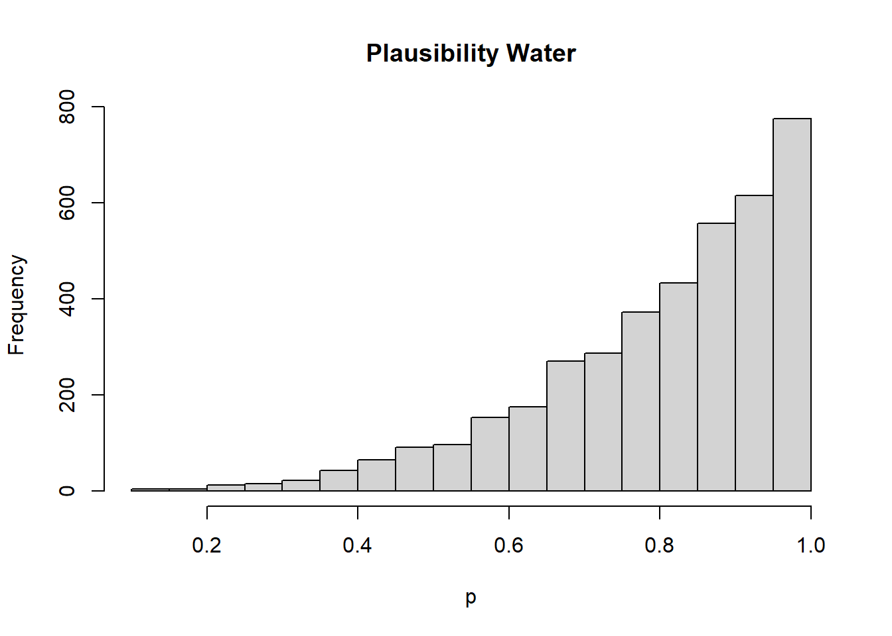
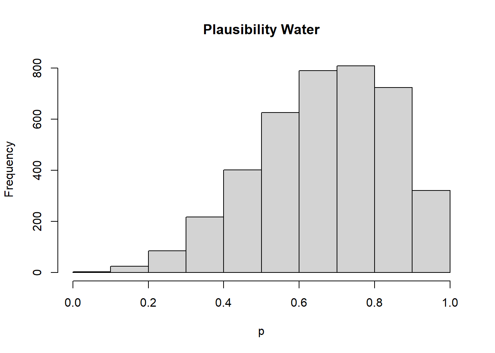

I think that this means that even though there is a true proportion of water, so the probability of water is .7 doesn’t have any real meaning. But we have imperfect ability to observe the true proportion of water, so this represents our belief about the proportion of water given what we have observed.
Medium
M1
See stan_models/m1.stan for the stan file
# datadata_1 <-c(1,1,1)data_2 <-c(1,1,1,0)data_3 <-c(0,1,1,0,1,1,1)# get the data into a list for standat1 <-list(N =length(data_1), water = data_1)dat2 <-list(N =length(data_2), water = data_2)dat3 <-list(N =length(data_3), water = data_3)# need to compile the stan model to C++library(cmdstanr)# check for syntax errorsmod_m1 <-cmdstan_model("stan_models/m1.stan", compile = F)mod_m1$check_syntax()# if syntax is good, compile the modelmod_m1 <-cmdstan_model("stan_models/m1.stan")# fit the model to the data, n.b. I only have show_messages=F because I don't want them to be shown in the# rendered document, I would normally want to see these.fit1 <- mod_m1$sample(data = dat1, chains =4, parallel_chains =4, show_messages = F)fit2 <- mod_m1$sample(data = dat2, chains =4, parallel_chains =4, show_messages = F)fit3 <- mod_m1$sample(data = dat3, chains =4, parallel_chains =4, show_messages = F)# plot histograms of the posterior samples of phist(fit1$draws("p", format ="df")$p, xlab ="p", main ="Plausibility Water")

hist(fit2$draws("p", format ="df")$p, xlab ="p", main ="Plausibility Water")

hist(fit3$draws("p", format ="df")$p, xlab ="p", main ="Plausibility Water")